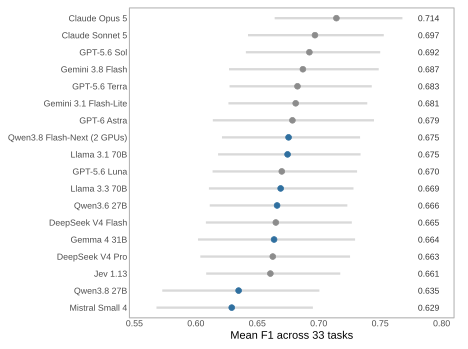
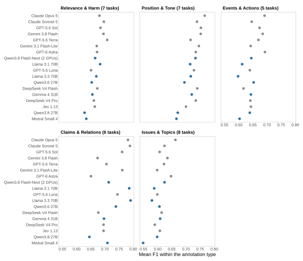
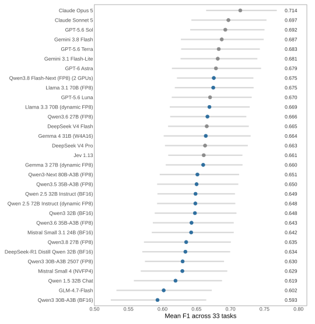

On this page, I compare the performance and cost of 31 language models – 20 open-weight models as well as 11 commercial models that are accessed through an API – on text classification tasks from political science. I rely on 33 coding tasks drawn from published papers, replication archives and public data sets, covering relevance, stance, tone, events, claims and topics. For each task, every model codes the same 100 texts, and I compare the labels assigned by the model to the labels assigned by human coders in the original data.
Overall, I find that differences between models are small. Claude Opus 5 has the highest mean F1 across tasks (0.714), and the best open-weight model, Qwen3.8 Flash-Next (FP8), reaches 0.675, which is higher than four of the 11 API models. In addition, differences of a few hundredths in the mean F1 often reverse on individual tasks – researchers who want to choose a model should therefore look at the tasks that are closest to their own application.
Overall performance

Cost and performance
![Cost and performance. Higher prices buy relatively small gains in accuracy. Claude Opus 5 costs about 220 times as much per text as Jev 1.13, the cheapest API model, and scores 0.054 higher (at batch prices, the ratio is about 110 instead of 220). Seven of the 11 API models score above the best open-weight model that runs on one GPU (dashed line), for which there is no per-text charge. Costs are per 1,000 texts at standard prices in September 2026, and hollow points are estimates based on token counts rather than provider bills.](figures/fig-cost-f1.svg)
API and open models by task
![API and open models by task. Each row shows one task, and points show the best API score minus the best score among the 19 open-weight models that run on one GPU. An open model matches or beats the best API model on 14 of the 33 tasks (blue points), although this number is somewhat inflated in favor of open models, since on every task I pick the best out of 19 open models. If I compare a fixed pair of models instead – Llama 3.1 70B and Claude Opus 5 – Llama matches or beats Opus on 9 tasks, and Opus leads by 0.040 F1 on average.](figures/fig-recent-task-gap.svg)
Performance by annotation type

Coding complexity
![Coding complexity. The gap between API and open models increases with coding complexity. If I compare the best open model on each task with the best API model on that task, the open model is ahead by 0.01 F1 on the 18 low-complexity tasks, while it trails by about 0.04 F1 on medium- and high-complexity tasks. High-complexity tasks allow several labels per text or use at least eight labels in practice, and medium-complexity tasks use at least three labels or have a prompt of 300 words or more. To count the number of labels in practice, I use the exponential of the entropy of the gold labels, which gives less weight to rare labels than to common ones.](figures/fig-recent-complexity.svg)
All 31 models and open-model speed
The first figure repeats the overview for all 31 models. The second figure compares the speed of the 13 open-weight models for which I recorded generation time.
Overall performance, all models

Quality and generation time
![Quality and generation time. Each point shows one open-weight model, with mean F1 plotted against generation time per text on one RTX PRO 6000 Blackwell GPU. Within each panel, the models coded the same texts with identical settings. In the August runs, vLLM processed as many texts at once as memory allowed, while in the September runs it processed at most 16, which means that times can be compared within but not across panels. The 6 models in the first panel need 0.1 to 1.4 minutes per 1,000 texts, the 7 models in the second panel need 0.6 to 1.4 minutes. Load and queue times are not included.](figures/fig-speed.svg)
The 33 tasks
Each line gives the task, the study or dataset it comes from, and what the model codes.
- agoraspeech criticism agenda (Sermpezis et al. 2026): criticism or agenda, one of 2 categories.
- ballard incivility (Ballard 2022): uncivil, yes or no.
- bestvater kavanaugh stance (Bestvater and Monroe 2023): pro kavanaugh, yes or no.
- bestvater wm stance (Bestvater and Monroe 2023): pro womens march, yes or no.
- brandt gtd attack type (Brandt et al. 2025): attack type, one of 9 categories.
- brandt political relevance (Brandt et al. 2025): relevant, yes or no.
- burnham covid threat minimization (Burnham 2025): threat minimizing, yes or no.
- burnham polnli entailment (Burnham et al. 2025): entails, yes or no.
- burnham polnli event entailment (Burnham et al. 2025): entails, yes or no.
- burnham trump stance (Burnham 2025): stance toward trump, one of 3 categories.
- cap crs policy topic (Policy Agendas Project 2025 and Congressional Research Service products): policy topic, one of 21 categories.
- cap party platform policy topic (Policy Agendas Project 2025): policy topic, one of 21 categories.
- chae semeval stance (Chae and Davidson 2026): stance, one of 3 categories.
- dicocco manifesto populism (Di Cocco and Monechi 2022): populist, yes or no.
- douglass icbe sentence event type (Douglass et al. 2024): event type, one of 5 categories.
- erlich ati topics (Erlich et al. 2022): 7 yes-or-no labels (Activities, Budget, Evaluation, ...).
- gilardi relevance (Gilardi et al. 2023): relevant, yes or no.
- gilardi stance (Gilardi et al. 2023): stance, one of 3 categories.
- halterman keith bfrs (Halterman and Keith 2026): event type, one of 12 categories.
- halterman keith cmp (Halterman and Keith 2026 plus Manifesto Project 2025): policy domain, one of 7 categories.
- haunss papea claims (Haunss et al. 2025): protest claim, one of 28 categories.
- haunss papea fgz forms (Haunss et al. 2025): protest form, one of 7 categories.
- mellon bes mii 2024 (Mellon et al. 2024): issue, one of 50 categories.
- muller fujimura campaign policy area (Müller and Fujimura 2025): policy area, one of 12 categories.
- ornstein scotus sentiment (Ornstein et al. 2025): sentiment, one of 3 categories.
- osnabruegge cross domain topic (Osnabruegge, Ash, and Morelli 2023): policy domain, one of 8 categories.
- plover cameo event (Halterman et al. 2023): event type, one of 18 categories.
- politicause causal relation (Garcia Corral et al. 2024): causal relation, yes or no.
- rheault line of fire incivility (Rheault, Rayment, and Musulan 2019): uncivil, yes or no.
- theocharis dynamics incivility (Theocharis et al. 2020): uncivil, yes or no.
- toxicity protests es (González-Bustamante 2024): toxic, yes or no.
- twitcivility impoliteness (Pendzel et al. 2023): impolite, yes or no.
- wesleyan creative ads 2022 (Zhang et al. 2025): tone, one of 3 categories.
Not evaluated and excluded models
The models below are not ranked. Not evaluated means that I could not run the model, for the reason listed. Excluded means that a run finished but violated the benchmark's rules.
The open-weight models are a selection rather than a complete list. Whether a model runs depends on its weight files, quantization, software support and GPU memory, not only on its size. A missing model therefore says nothing about its quality.
- Mistral Medium 3.5 128B: not evaluated. License eligibility is unresolved; no Hive inference has been submitted.
- GLM-5.3: not evaluated. No supported single-node Hive runtime was verified for the available quantized weights.
- GLM-5.3-Flash: not evaluated. The SM120 NoPE-MLA runtime issue is open; GPU pilot and fit remain untested.
- MiniMax M3 NVFP4: not evaluated. The pinned four-GPU Hive pilot failed before inference: the official NVFP4 runtime has no MoE backend that preserves MiniMax M3's SwiGLU clamp on SM120 RTX PRO 6000 Blackwell GPUs. Zero predictions were produced.
- Kimi K3: not evaluated. Native MXFP4 weight files alone exceed the largest currently listed Hive single-node GPU memory; no multi-node or paid fallback was authorized.
- GPT-OSS 120B (MXFP4): excluded. Job 23393692_0 produced a malformed generated channel in an uncheckpointed task batch without an identifiable item. It cannot be assigned to a frozen text and scored incorrect. Job 23415406 completed a second attempt and retained one separate malformed response with an item ID. Its fully audited 3,400-item output remains exploratory because the first failure cannot be scored under the no-answer-quality-retry rule.
Where the models ran
- API models: I called each provider's API between 10 and 20 September 2026, using the batch endpoints for OpenAI and Anthropic and sending one request per text for the other providers. Jev 1.13 is a model by TypeSafe that answers by choosing among a fixed set of options, and I called it via OpenRouter's Decisions API.
- Open-weight models: each model ran on a single NVIDIA RTX PRO 6000 Blackwell GPU (96 GB of memory) on UC Davis's Hive computing cluster, using vLLM 0.26 at temperature 0. The only exception is Qwen3.8 Flash-Next, which needed two of these GPUs and a development version of vLLM.
- Settings: reasoning is turned off for all models where this is possible, otherwise it is set to the lowest available level. API models run at the default temperature of their provider, except for the two DeepSeek models, which run at 0.1. Since every model coded every text only once, I cannot say how much the answers of a given model vary between runs. All models may return at most 256 tokens, with the exception of Jev 1.13, which returns one of the labels rather than free text.
- Not tested: I did not run the API models with extended reasoning, which increases both cost and response time, and I did not run the largest open-weight models (Kimi K3, GLM-5.3 and MiniMax M3), since these do not run on this hardware. It is possible that the strongest configurations of these models would score higher than the top scores on this page.
Methods and limitations
Sample. For each task, I draw 100 texts by hashing task and item identifiers with the seed 20260910. All models receive the same texts, gold labels and prompts, except for Jev 1.13, which receives the prompt in its provider's choice format (i.e. with a list of the allowed labels for each output field). I only reuse earlier predictions if inputs and settings match exactly.
Scoring. For binary tasks, I use the F1 score for the positive class, for tasks with several binary labels I use the average of the per-label F1 scores, and for categorical tasks with a single label I use macro F1, which gives equal weight to each class. If a class appears neither in the gold labels nor in the predictions, its F1 is 0 by convention, which does not say anything about the model. Unusable answers are counted as incorrect, while infrastructure failures are recorded separately.
Limits. All results are based on 33 tasks. Since most tasks are taken from published data sets, some of the texts or labels may have been part of the training data of the models, which would increase their scores, and I am not able to rule this out. Before using a model at scale, researchers should validate it on labeled examples from their own task.
How to cite
Hilbig, Hanno. 2026. Political Science LLM Benchmark. Results as of September 2026, release refresh_20260910. https://www.hannohilbig.com/llm-benchmark/.